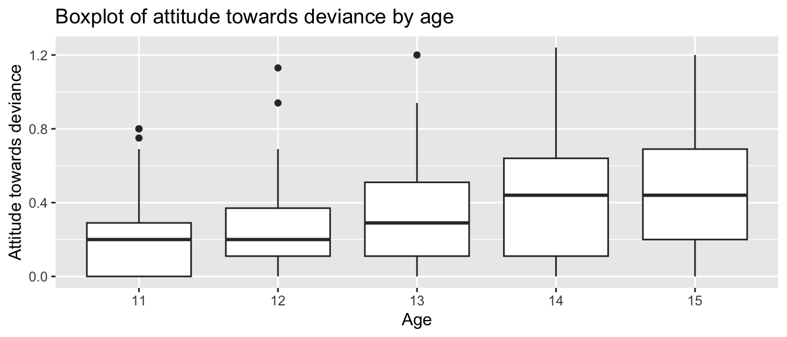
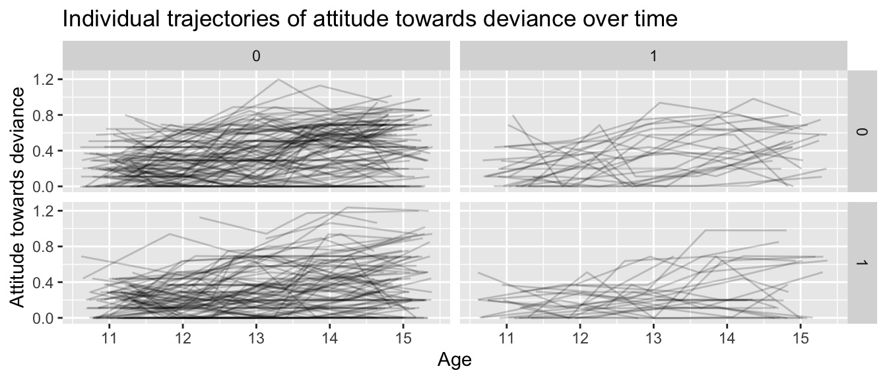

This chapter gives a brief introduction to a variety of packages for summarizing variables. We being by using ggplot() to make a few simple plots and then turn to making summary tables. These tools are useful in general for exploring and describing data, and they may be useful for final projects and other things as well.
5.1 National Youth Survey Example
Our running example is the National Youth Survey (NYS) data as described in Raudenbush and Bryk, page 190. This data comes from a survey in which the same students were asked yearly about their acceptance of 9 “deviant” behaviors (such as smoking marijuana, stealing, etc.). The study began in 1976, and followed two cohorts of children, starting at ages 11 and 14 respectively. We will analyze the first 5 years of data.
At each time point, we have measures of:
ATTIT, the attitude towards deviance, with higher numbers implying higher tolerance for deviant behaviors.
EXPO, the “exposure”, based on asking the children how many friends they had who had engaged in each of the “deviant” behaviors.
Both of these variables have been transformed to a logarithmic scale to reduce skew.
For each student, we have:
Gender (binary)
Minority status (binary)
Family income, in units of $10K (this can be either categorical or continuous).
We’ll focus on the first cohort, from ages 11-15. First, let’s read the data. Note that this data frame is in “wide format”. That is, there is only one row for each student, with all the different observations for that student in different columns of that one row.
Generally, we would want such data in “long format”, i.e. each student has multiple rows for the different observations. The pivot_longer() command does this for us.
Just to get a sense of the data, let’s plot each age as a boxplot
ggplot(nys1, aes(age_fac, ATTIT)) +geom_boxplot() +labs(title ="Boxplot of attitude towards deviance by age", x ="Age", y ="Attitude towards deviance")

Note: The boxplot’s “x” variable is the group. You get one box per group. The “y” variable is the data we are making boxplots of.
Note some features of the data:
First, we see that ATTIT goes up over time.
Second, we see the variation of points also goes up over time. This is evidence of heteroskedasticity.
If we plot individual lines, grouped by gender and minority status, we have:
nys1 |>drop_na() |>ggplot(aes(age, ATTIT, group=ID)) +facet_grid( FEMALE ~ MINORITY ) +geom_line(alpha=0.2, position ="jitter") +labs(title ="Individual trajectories of attitude towards deviance over time",x ="Age",y ="Attitude towards deviance")

If we squint, we can kind of see correlation of residuals: some students have systematically lower trajectories and some students have systematically higher trajectories (although there is a lot of bouncing around).
library(tableone)# sample mean CreateTableOne(data = nys1,vars =c("ATTIT"))
Overall
n 1079
ATTIT (mean (SD)) 0.33 (0.27)
# you can also stratify by a variables of interestCreateTableOne(data = nys1,vars =c("ATTIT"), strata =c("FEMALE"))
Stratified by FEMALE
0 1 p test
n 559 520
ATTIT (mean (SD)) 0.37 (0.27) 0.29 (0.27) <0.001
# you can also include binary variablesCreateTableOne(data = nys1, vars =c("ATTIT", "age_fac"), # include both binary and continuous variables herefactorVars =c("age_fac"), # include only binary variables herestrata =c("FEMALE"))
Another package for obtaining detailed descriptive statistics for your data is the psych package in R, which has describe(), a function that generates a comprehensive summary of each variable in your dataset.
If you haven’t already installed the psych package, you can do so using install.packages(). You then load the library as so:
# install.packages("psych")library(psych)
The describe() function provides descriptive statistics such as mean, standard deviation, skewness, and kurtosis for each variable in your dataset.
vars n mean sd median trimmed mad min max range
ID 1 1079 841.47 483.55 851.00 839.79 597.49 3.00 1720.00 1717.00
FEMALE 2 1079 0.48 0.50 0.00 0.48 0.00 0.00 1.00 1.00
MINORITY 3 1079 0.21 0.41 0.00 0.13 0.00 0.00 1.00 1.00
INCOME 4 1079 4.10 2.35 4.00 3.87 2.97 1.00 10.00 9.00
age 5 1079 13.04 1.40 13.00 13.05 1.48 11.00 15.00 4.00
age_fac* 6 1079 3.04 1.40 3.00 3.05 1.48 1.00 5.00 4.00
ATTIT 7 1079 0.33 0.27 0.29 0.31 0.27 0.00 1.24 1.24
EXPO 8 1079 0.00 0.30 -0.09 -0.03 0.27 -0.37 1.04 1.41
skew kurtosis se
ID 0.01 -1.18 14.72
FEMALE 0.07 -2.00 0.02
MINORITY 1.45 0.09 0.01
INCOME 0.79 0.03 0.07
age -0.04 -1.27 0.04
age_fac* -0.04 -1.27 0.04
ATTIT 0.63 -0.36 0.01
EXPO 0.88 0.31 0.01
The describe() function generates a table with the following columns:
vars: The variable number.
n: Number of valid cases.
mean: The mean of the variable.
sd: The standard deviation.
median: The median of the variable.
trimmed: The mean after trimming 10% of the data from both ends.
mad: The median absolute deviation (a robust estimate of the variability).
min: The minimum value.
max: The maximum value.
range: The range (max - min).
skew: The skewness (measure of asymmetry).
kurtosis: The kurtosis (measure of peakedness).
se: The standard error.
5.5 The skimr Package
Yet another package that provides a comprehensive summary of your data is the skimr package. This package is more about exploring data in the moment, and less about report generation, however.
One warning is skimr can generate special characters that can crash a R markdown report in some cases–so if you are using it, and getting weird errors when trying to render your reports, try commenting out the skim() call. Using it is simple:
skimr::skim( nys1 )
Data summary
Name
nys1
Number of rows
1079
Number of columns
8
_______________________
Column type frequency:
factor
1
numeric
7
________________________
Group variables
None
Variable type: factor
skim_variable
n_missing
complete_rate
ordered
n_unique
top_counts
age_fac
0
1
FALSE
5
13: 230, 14: 220, 15: 218, 12: 209
Variable type: numeric
skim_variable
n_missing
complete_rate
mean
sd
p0
p25
p50
p75
p100
hist
ID
0
1
841.47
483.55
3.00
422.00
851.00
1242.00
1720.00
▇▇▆▇▆
FEMALE
0
1
0.48
0.50
0.00
0.00
0.00
1.00
1.00
▇▁▁▁▇
MINORITY
0
1
0.21
0.41
0.00
0.00
0.00
0.00
1.00
▇▁▁▁▂
INCOME
0
1
4.10
2.35
1.00
2.00
4.00
5.00
10.00
▇▇▅▂▂
age
0
1
13.04
1.40
11.00
12.00
13.00
14.00
15.00
▇▇▇▇▇
ATTIT
0
1
0.33
0.27
0.00
0.11
0.29
0.51
1.24
▇▅▃▂▁
EXPO
0
1
0.00
0.30
-0.37
-0.27
-0.09
0.20
1.04
▇▃▃▁▁
5.6 Summarizing by group
To plot summaries by group, first aggregate your data, and plot the results. Do like so: